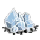
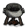
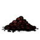
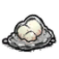
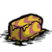

美式咖啡 只能由烹饪产生
在锅中烹饪同时满足以下条件即可产生：
不可食用度≤1
肉度＜0.5
咖啡豆/咖啡果≥1
食用后4分钟内获得以下效果：
任何理智消耗行为将会累积，期间理智无法下降
料理效果结束后累积的理智会全部结算扣除
免疫催眠
本饮品不提供动作加速
使用调味品右键点击咖啡，可为其额外增加食用后恢复的状态：
| 调味品 | 返还物品 | 额外效果 |
|---|---|---|
| 蜂蜜 | 有点甜的美式咖啡 |  +10 +10 |
| 盐晶 | 有点咸的美式咖啡 |  +8 +8 |
 冰块 | 凉凉的美式咖啡 |  -10 +10 -10 +10 |
| 电羊奶 | 有点刺激的拿铁咖啡 |

烹饪示例配方一： + + +
+ + +
配方二： +

+ +配方中的图标代表锅内的 4 格食材，除咖啡豆／咖啡果外的锅位可用任意不改变料理判定的食材填充（示例使用冰块）。
美式咖啡

食用后：
+5 -5 +10
保质期：5天（大约40分钟）
堆叠上限：20
漂浮：是
优先级：10
烹饪时长：20秒
腐烂产物：
物品id：hina_coffee
拿铁咖啡 只能由烹饪产生
在锅中烹饪同时满足以下条件即可产生：
不可食用度≤1
肉度＜0.5
咖啡豆≥1
乳制品≥1
拿铁咖啡不能使用咖啡果制作，只认咖啡豆
可提供乳制品度的食材：电羊奶、乳白物；黄油也算乳制品，但会优先做成黄油咖啡
食用后6分钟内获得以下效果：
任何理智消耗行为将会累积，期间理智无法下降
料理效果结束后累积的理智会全部结算扣除
免疫催眠
动作速度 +20%
动作加速的生效范围：
| 动作 | 原版 | 拿铁 +20% |
|---|---|---|
| 砍树（每次挥击） | 0.87 秒 | 0.72 秒 |
| 挖矿 / 锤击（每次挥击） | 0.63 秒 | 0.53 秒 |
| 挖掘（每次挥击） | 1.20 秒 | 1.00 秒 |
| 采集草 / 树枝 / 芦苇 / 仙人掌 | 1.00 秒 | 0.83 秒 |
| 建造 | 0.70 秒 | 0.58 秒 |
| 采集蘑菇 / 花 / 胡萝卜 / 洞穴蕨，拾取 / 使用物品、种植、喂食等 | 0.33 秒 | 0.28 秒 |
| 采集浆果丛 | 不生效 | |
| 攻击 | 不生效 | |
| 钓鱼 | 不生效 | |
砍树 / 挖矿 / 锤击 / 挖掘是循环作业，每次挥击的间隔直接缩短，连续作业时体感最明显。
采集浆果丛在游戏里走的是独立的「摇晃」动作分支，和采草、采树枝不是同一套，这套加速没有覆盖它，所以喝咖啡采浆果不会变快。
使用调味品右键点击咖啡，可为其额外增加食用后恢复的状态：
| 调味品 | 返还物品 | 额外效果 |
|---|---|---|
| 蜂蜜 | 有点甜的拿铁咖啡 | +10 |
| 盐晶 | 有点咸的拿铁咖啡 | +15 |
| 冰块 | 凉凉的拿铁咖啡 | +15 |
| 电羊奶 | 有点刺激的拿铁咖啡 | 获得电羊冻效果 |
烹饪示例
配方一： +

+ +配方中的图标代表锅内的 4 格食材，除咖啡豆与乳制品外的锅位可用任意不改变料理判定的食材填充（示例使用冰块）。
拿铁咖啡

食用后：
+20 +10 +30
保质期：5天（大约40分钟）
堆叠上限：20
漂浮：是
优先级：10
烹饪时长：20秒
腐烂产物：
物品id：hina_milkcoffee
黄油咖啡 只能由烹饪产生
在锅中烹饪同时满足以下条件即可产生：
不可食用度≤1
肉度＜0.5
咖啡豆≥1
黄油≥1
黄油咖啡不能使用咖啡果制作，只认咖啡豆
食用后8分钟内获得以下效果：
任何理智消耗行为将会累积，期间理智无法下降
料理效果结束后累积的理智会全部结算扣除
免疫催眠
动作速度 +50%
动作加速的生效范围：
| 动作 | 原版 | 黄油 +50% |
|---|---|---|
| 砍树（每次挥击） | 0.87 秒 | 0.58 秒 |
| 挖矿 / 锤击（每次挥击） | 0.63 秒 | 0.42 秒 |
| 挖掘（每次挥击） | 1.20 秒 | 0.80 秒 |
| 采集草 / 树枝 / 芦苇 / 仙人掌 | 1.00 秒 | 0.67 秒 |
| 建造 | 0.70 秒 | 0.47 秒 |
| 采集蘑菇 / 花 / 胡萝卜 / 洞穴蕨，拾取 / 使用物品、种植、喂食等 | 0.33 秒 | 0.22 秒 |
| 采集浆果丛 | 不生效 | |
| 攻击 | 不生效 | |
| 钓鱼 | 不生效 | |
砍树 / 挖矿 / 锤击 / 挖掘是循环作业，每次挥击的间隔直接缩短，连续作业时体感最明显。
采集浆果丛在游戏里走的是独立的「摇晃」动作分支，和采草、采树枝不是同一套，这套加速没有覆盖它，所以喝咖啡采浆果不会变快。
攻击命中时，有 10% 概率使目标被黄油糊脸 2秒
使用调味品右键点击咖啡，可为其额外增加食用后恢复的状态：
| 调味品 | 返还物品 | 额外效果 |
|---|---|---|
| 蜂蜜 | 有点甜的黄油咖啡 | +20 |
| 盐晶 | 有点咸的黄油咖啡 | +15 |
| 冰块 | 凉凉的黄油咖啡 | +10 |
| 电羊奶 | 有点刺激的黄油咖啡 | 获得电羊冻效果，日奈额外获得 10% 暴击率 |
烹饪示例
配方一： +

+ +配方中的图标代表锅内的 4 格食材，除咖啡豆与黄油外的锅位可用任意不改变料理判定的食材填充（示例使用冰块）。
黄油咖啡

食用后：
+20 +30 +60
保质期：5天（大约40分钟）
堆叠上限：20
漂浮：是
优先级：100
烹饪时长：20秒
腐烂产物：
物品id：hina_buttercoffee
所有人拒绝食用
使用火源烹饪之后变为 美式咖啡
任何咖啡饮品（美式／拿铁／黄油咖啡，含各自的调味变体）腐烂后都会变成 刷锅水？
由于腐烂产物固定为刷锅水？，放坏的调味咖啡经火源加热后只会得到普通的美式咖啡，调味效果不会保留
刷锅水？
堆叠上限：20
漂浮：是
食用：不可食用
物品id：hina_coffeebadwater